RS232实验#
实验Vivado工程为“rs232_test”。
本章采用AN3485模块的RS232电路实现UART数据传输。
模块介绍#
黑金AN3845模块专门为工业现场应用设计的RS232/485/422通信模块。它包含一路RS232接口，2路RS485和2路RS422通信接口。配合开发板实现RS232、485和422的数据远程传输和通信。RS232、485和422接口分别采用MAX3232、MAX3485和MAX3490芯片作为电平转换芯片。模块留有一个40针的排母用于连接开发板，RS232接口为一个标准的DB9串口公座，通过串口线直接连接电脑或者其他设备； RS485和RS422接口采用接线端子跟外部连接，超远距离传输可达上千米，另外RS485和RS422接口部分带有正负15KV的ESD防护功能。
AN3845模块实物照片如下：
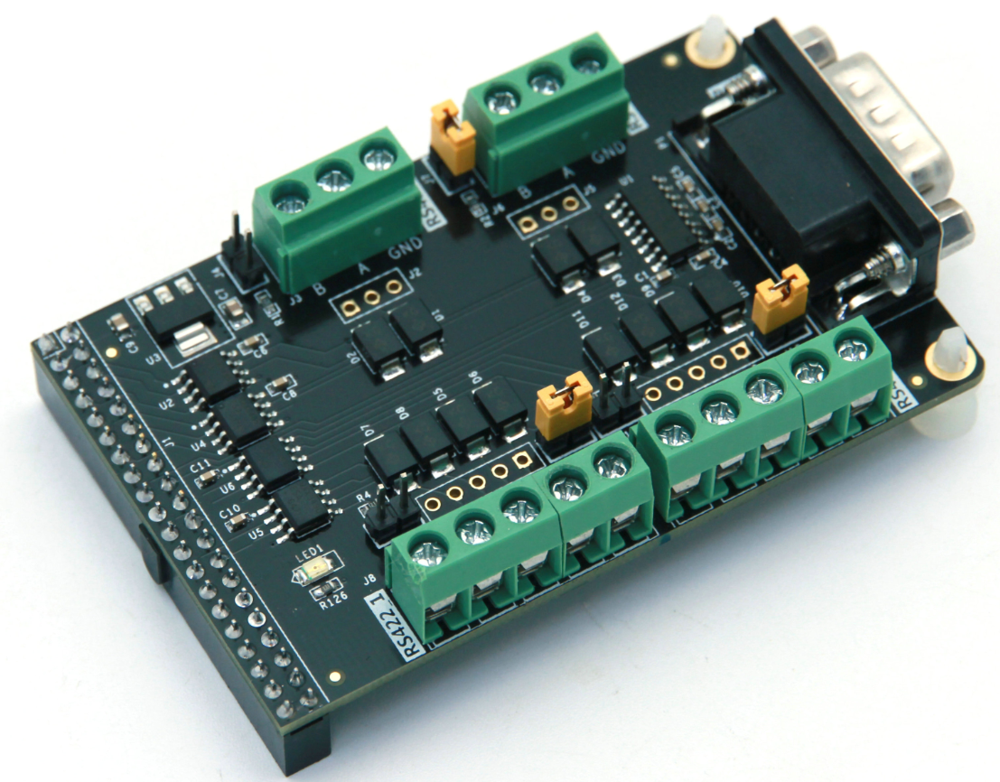AN3845通信模块正面图
模块参数说明#
以下为AN3485通信模块的详细参数:
RS232接口
一路标准的DB9公座串行接口；
使用MAX3232作为RS232和 TTL电平的转换；
传输率高达120Kbps数据通讯速率
RS485接口
两路RS485接口，采用3线的接线端子；
使用MAX3485作为RS485和TTL的电平转换;
工业级设计，抗干扰能力超强，同时采用有效的防雷设计;
具有120欧匹配电阻，插上跳线帽即可使能匹配电阻，长距离传输时建议短接。
支持多机通讯，允许接在最多128个设备的总线上
传输率高达500Kbps数据通讯速率。
RS422接口
两路RS422接口，采用5线的接线端子；
使用MAX3490作为RS422和TTL的电平转换;
工业级设计，抗干扰能力超强，同时采用有效的防雷设计;
具有120欧匹配电阻，插上跳线帽即可使能匹配电阻，长距离传输时建议短接。
支持多机通讯，允许接在最多128个设备的总线上
传输率高达500Kbps数据通讯速率。
模块功能说明#
AN3485模块的RS232接口采用MAX3232芯片实现RS232和+3.3V TTL电平的转换。TTL电平的串口接收和发送信号（RXD,TXD）连接到40针的连接器上跟外面的FPGA芯片或者ARM芯片实现串口通信。RS232串口通信的最高速度为120kbps，RS232接口的原理设计图如下图所示。
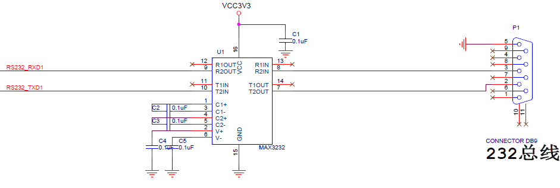程序设计#
本文所述的串口指异步串行通信，异步串行是指UART（Universal Asynchronous Receiver/Transmitter），通用异步接收/发送。本实验程序设计为每秒钟向串口发送” HELLO ALINX”，如果收到RXD接收的数据，再把接收的数据发送出去，实现回环的功能。
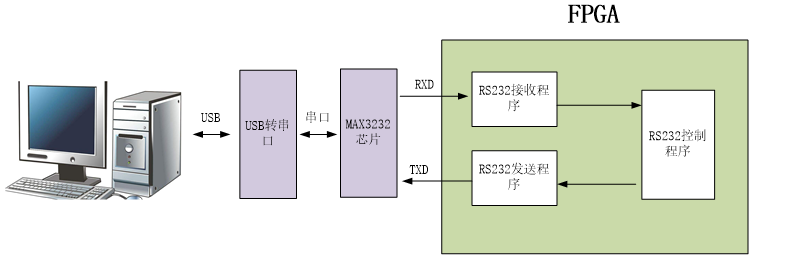异步串口通信协议#
消息帧从一个低位起始位开始，后面是7个或8个数据位，一个可用的奇偶位和一个或几个高位停止位。接收器发现开始位时它就知道数据准备发送，并尝试与发送器时钟频率同步。如果选择了奇偶校验，UART就在数据位后面加上奇偶位。奇偶位可用来帮助错误校验。在接收过程中，UART从消息帧中去掉起始位和结束位，对进来的字节进行奇偶校验，并将数据字节从串行转换成并行。UART 传输时序如下图所示：
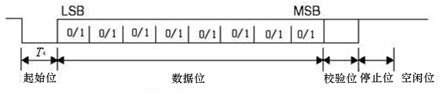从波形上可以看出起始位是低电平，停止位和空闲位都是高电平，也就是说没有数据传输时是高电平，利用这个特点我们可以准确接收数据，当一个下降沿事件发生时，我们认为将进行一次数据传输。
波特率#
常见的串口通信波特率有2400 、9600、115200等，发送和接收波特率必须保持一致才能正确通信。波特率是指1秒最大传输的数据位数，包括起始位、数据位、校验位、停止位。假如通信波特率设定为9600，那么一个数据位的时间长度是1/9600秒，本实验中的波特率由50MHz时钟产生。
接收模块设计#
串口接收模块uart_rx是个参数化可配置模块，参数“CLK_FRE”定义接收模块的系统时钟频率，单位是Mhz，参数“BAUD_RATE”是波特率。接收状态机状态转换图如下：

“S_IDLE”状态为空闲状态，上电后进入“S_IDLE”，如果信号“rx_pin”有下降沿，我们认为是串口的起始位，进入状态“S_START”,等一个BIT时间起始位结束后进入数据位接收状态“S_REC_BYTE”,本实验中数据位设计是8位，接收完成以后进入“S_STOP”状态，在“S_STOP”没有等待一个BIT周期，只等待了半个BIT时间，这是因为如果等待了一个周期，有可能会错过下一个数据的起始位判断，最后进入“S_DATA”状态，将接收到的数据送到其他模块。在这个模块我们提一点：为了满足采样定理，在接受数据时每个数据都在波特率计数器的时间中点进行采样，以避免数据出错的情况：
//receive serial data bit data
always@(posedge clk or negedge rst_n)
begin
if(rst_n == 1'b0)
rx_bits <= 8'd0;
else if(state == S_REC_BYTE && cycle_cnt == CYCLE/2 - 1)
rx_bits[bit_cnt] <= rx_pin;
else
rx_bits <= rx_bits;
end
注意：本实验没有设计奇偶校验位。
信号名称 |
方向 |
宽度 (bit) |
说明 |
|---|---|---|---|
clk |
i n |
1 |
系统时钟 |
rst_n |
i n |
1 |
异步复位，低电平复位 |
rx_data |
o u t |
8 |
接收到的串口数据（8位数据） |
rx_data_valid |
o u t |
1 |
接收到的串口数据有效（高有效） |
rx_data_ready |
i n |
1 |
表示用户可以从接收模块接收数据， 当rx_data_ready和rx_data_valid都为高时数据送出 |
rx_pin |
i n |
1 |
串口接收数据输入 |
串口接收模块uart_rx端口
发送模块设计#
发送模块uart_tx设计和接收模块相似，也是使用状态机，状态转换图如下：
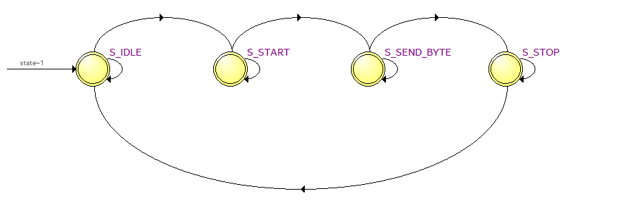上电后进入“S_IDLE”空闲状态，如果有发送请求，进入发送起始位状态“S_START”,起始位发送完成后进入发送数据位状态“S_SEND_BYTE”,数据位发送完成后进入发送停止位状态“S_STOP”,停止位发送完成后又进入空闲状态。在数据发送模块中，从顶层模块写入的数据直接传递给寄存器‘tx_reg’，并通过‘tx_reg’寄存器模拟串口传输协议在状态机的条件转换下进行数据传送：
always@(posedge clk or negedge rst_n)
begin
if(rst_n == 1'b0)
tx_reg <= 1'b1;
else
case(state)
S_IDLE,S_STOP:
tx_reg <= 1'b1;
S_START:
tx_reg <= 1'b0;
S_SEND_BYTE:
tx_reg <= tx_data_latch[bit_cnt];
default:
tx_reg <= 1'b1;
endcase
end
信号 名称 |
方向 |
宽度 (bit) |
说明 |
|---|---|---|---|
clk |
i n |
1 |
系统时钟 |
rst_n |
i n |
1 |
异步复位，低电平复位 |
tx_data |
i n |
8 |
要发送的串口数据(8位数据） |
tx_data_valid |
i n |
1 |
发送的串口数据有效（高有效） |
tx_data_ready |
o u t |
1 |
发送模块已准备好发送数 据，用户可将tx_data_valid信号拉高发送数据给发送模块 。当tx_data_ready和tx_data_valid都为高时数据被发送 |
tx_pin |
o u t |
1 |
串口发送数据发送 |
串口发送模块uart_tx端口
波特率的产生#
在发送和接收模块中，声明了参数CYCLE，也就是UART一个周期的计数值，当然计数是在50MHz时钟下进行的。用户只要设定好CLK_FRE和BAUD_RATE这两个参数即可。
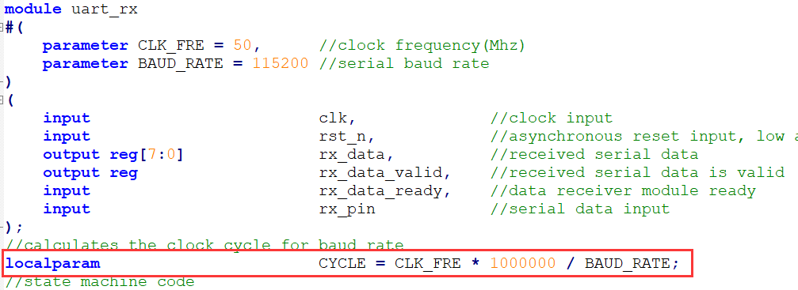测试程序#
测试程序设计FPGA为1秒向串口发送一次“HELLO ALINX\r\n”,不发送期间，如果接受到串口数据，直接把接收到的数据送到发送模块再返回。“\r\n”,在这里和C语言中表示一致，都是回车换行。
测试程序分别例化了发送模块和接收模块，同时将参数传递进去，波特率设置为115200。
always@(posedge sys_clk or negedge rst_n)
begin
if(rst_n == 1'b0)
begin
wait_cnt <= 32'd0;
tx_data <= 8'd0;
state <= IDLE;
tx_cnt <= 8'd0;
tx_data_valid <= 1'b0;
end
else
case(state)
IDLE:
state <= SEND;
SEND:
begin
wait_cnt <= 32'd0;
tx_data <= tx_str;
if(tx_data_valid == 1'b1 && tx_data_ready == 1'b1 && tx_cnt < 8'd12)//Send 12 bytes data
begin
tx_cnt <= tx_cnt + 8'd1; //Send data counter
end
else if(tx_data_valid && tx_data_ready)//last byte sent is complete
begin
tx_cnt <= 8'd0;
tx_data_valid <= 1'b0;
state <= WAIT;
end
else if(~tx_data_valid)
begin
tx_data_valid <= 1'b1;
end
end
WAIT:
begin
wait_cnt <= wait_cnt + 32'd1;
if(rx_data_valid == 1'b1)
begin
tx_data_valid <= 1'b1;
tx_data <= rx_data; // send uart received data
end
else if(tx_data_valid && tx_data_ready)
begin
tx_data_valid <= 1'b0;
end
else if(wait_cnt >= CLK_FRE * 1000000) // wait for 1 second
state <= SEND;
end
default:
state <= IDLE;
endcase
end
//combinational logic
//Send "HELLO ALINX\r\n"
always@(*)
begin
case(tx_cnt)
8'd0 : tx_str <= "H";
8'd1 : tx_str <= "E";
8'd2 : tx_str <= "L";
8'd3 : tx_str <= "L";
8'd4 : tx_str <= "O";
8'd5 : tx_str <= " ";
8'd6 : tx_str <= "A";
8'd7 : tx_str <= "L";
8'd8 : tx_str <= "I";
8'd9 : tx_str <= "N";
8'd10: tx_str <= "X";
8'd11: tx_str <= "\r";
8'd12: tx_str <= "\n";
default:tx_str <= 8'd0;
endcase
end
uart_rx#
(
.CLK_FRE(CLK_FRE),
.BAUD_RATE(115200)
) uart_rx_inst
(
.clk (sys_clk ),
.rst_n (rst_n ),
.rx_data (rx_data ),
.rx_data_valid (rx_data_valid ),
.rx_data_ready (rx_data_ready ),
.rx_pin (uart_rx )
);
uart_tx#
(
.CLK_FRE(CLK_FRE),
.BAUD_RATE(115200)
) uart_tx_inst
(
.clk (sys_clk ),
.rst_n (rst_n ),
.tx_data (tx_data ),
.tx_data_valid (tx_data_valid ),
.tx_data_ready (tx_data_ready ),
.tx_pin (uart_tx )
);
仿真#
这里我们添加了一个串口接收的激励程序vtf_uart_test.v文件，用来仿真uart串口接收。这里向串口模块的uart_rx发送0xa3的数据,每位的数据按115200的波特率发送，1位起始位，8位数据位和1位停止位。
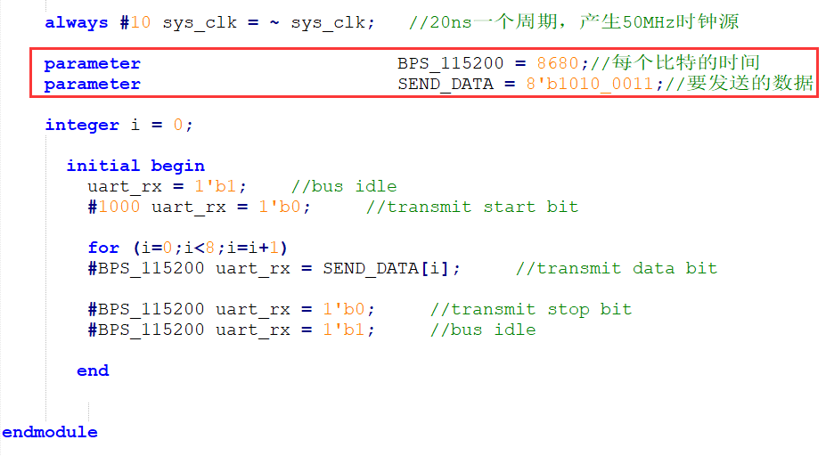仿真的结果如下，当程序接收到8位数据的时候，rx_data_valid有效，rx_data[7:0]的数据位a3。

实验测试#
将AN3485模块插到J11扩展口上，这里使用了USB转RS232/RS485/RS422的设备，由于很多电脑都没有9针的串行接口，我们通过串口线与USB转串口设备连接，再通过USB连接到电脑上。如果电脑有串口的话，可以直接连接串口。
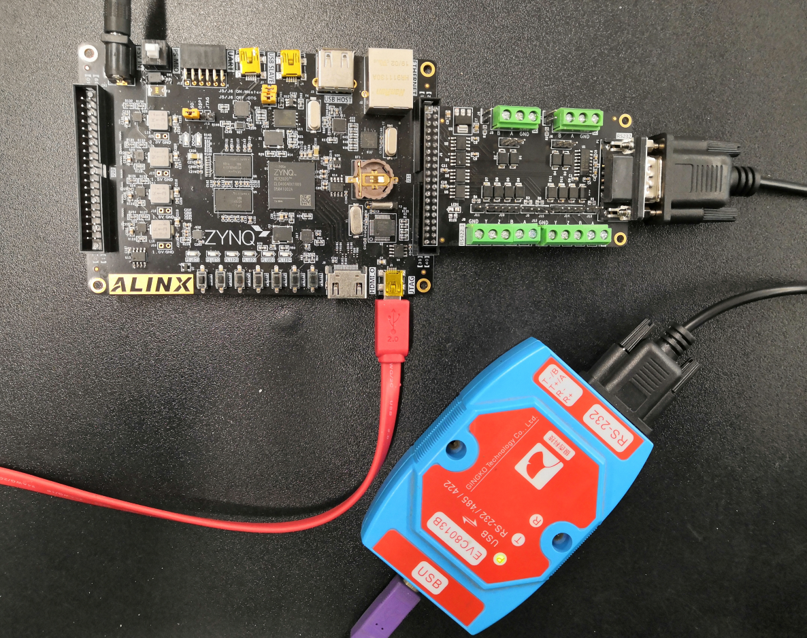在设备管理器中找到串口号”COM5”
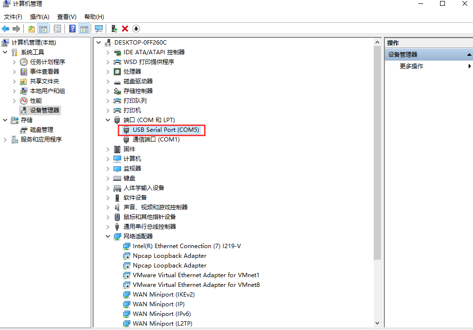打开串口调试，端口选择“COM5”（根据自己情况选择），波特率设置115200，检验位选None，数据位选8，停止位选1，然后点击“打开串口”。此软件在例程文件夹下。
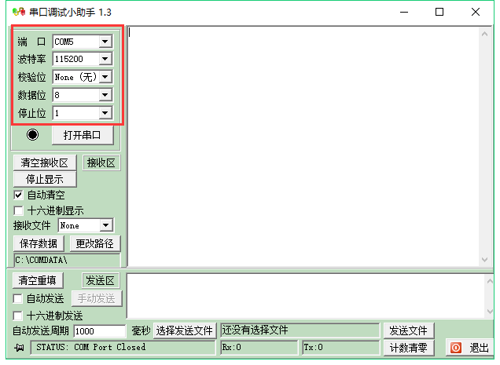打开串口以后，每秒可收到“HELLO ALINX”，在发送区输入框输入要发送的文字，点击“手动发送”，可以看到接收到自己发送的字符。
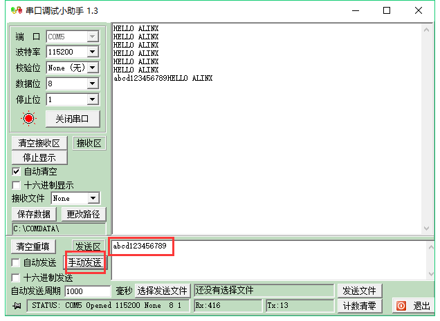